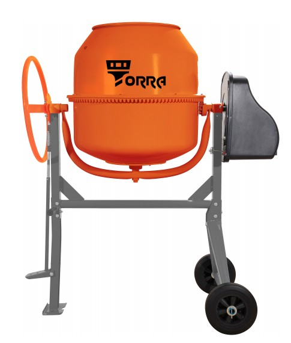
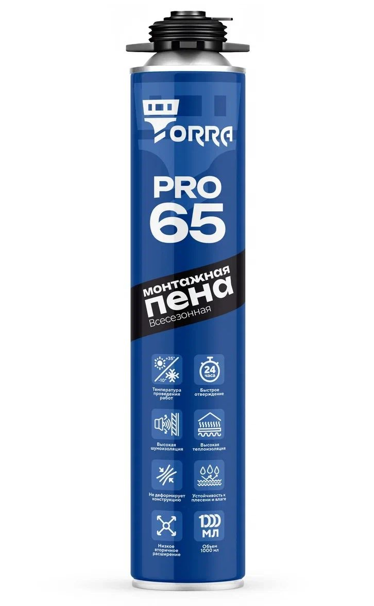
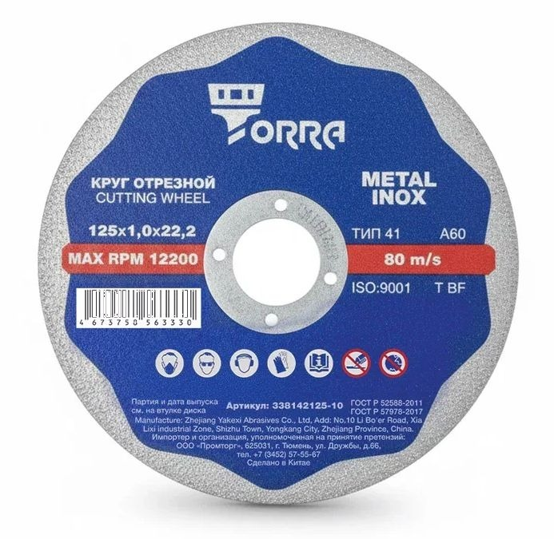
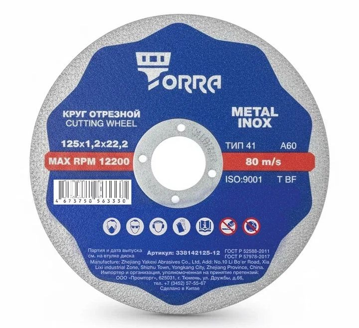
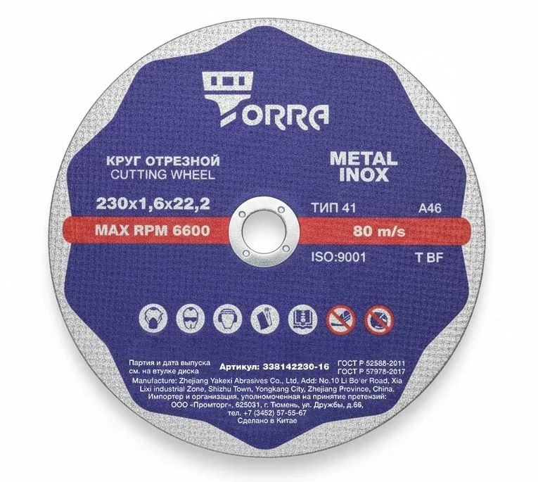
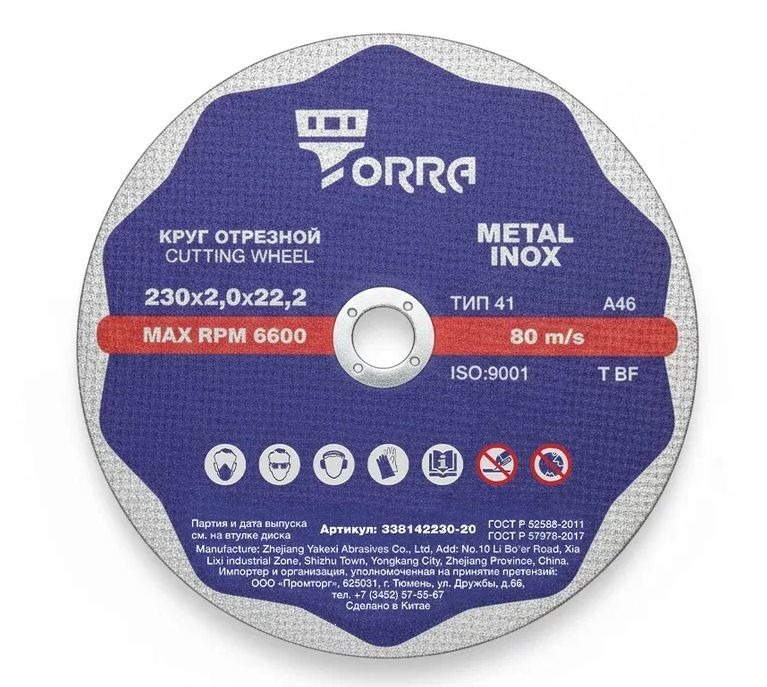

Своя марка · розница
TORRA
Бетоносмесители разных объёмов, профессиональная пена TORRA PRO 65 и супертонкие отрезные круги по металлу и нержавейке.

Что сказать покупателю
- «TORRA — наша марка для стройки: миксеры, пена, круги».
- По пене: PRO 65 — профессиональная, под пистолет (рядом с MIKA 65).
- По кругам: тонкий рез металла и нержавейки.
Важно: в названиях бетоносмесителей встречается серия AOER — это исполнение внутри TORRA, не отдельный бренд.
Бетоносмесители TORRA

арт. 84040CE

арт. 84050CE

арт. 84060CE

арт. 84070CE

арт. 84072CE

арт. 84009
Также исполнения TORRA …L (AOER): 140 / 160 / 180 / 200 / 220 / 240 л — уточняйте наличие.
Пена TORRA PRO 65

Как продавать: двери/окна под пистолет — предложите выбор между MIKA PRO 65 и TORRA PRO 65 по наличию и цене.
Отрезные круги Torra

арт. 338142125-10

арт. 338142125-12

арт. 338142230-16

арт. 338142230-20
Как продавать рядом с MIKA
- Бетоносмеситель — уточните объём барабана, сравните MIKA и TORRA.
- Двери/окна — MIKA 65 проф или TORRA PRO 65.
- Резка металла — круги Torra; камень/бетон/плитка — алмазные диски MIKA.
Каталог: gvozditut.ru/brands/torra